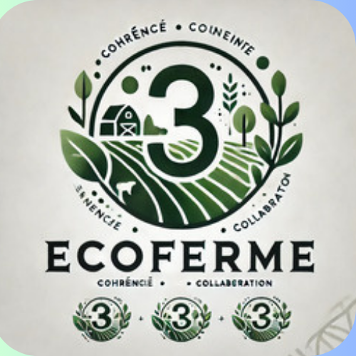
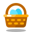
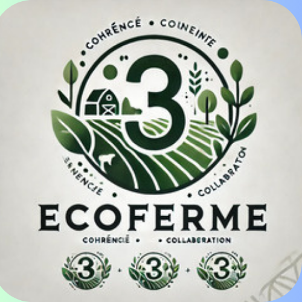
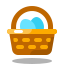

Engagement d'ECOFERME, notre mission est claire : nous nous engageons à vous offrir des produits qui sont non seulement sains, mais aussi responsables. Dans un monde où la qualité alimentaire est souvent compromise par des pratiques industrielles, nous choisissons de tracer un chemin différent. Une Agriculture Durable: Nous croyons fermement qu'un élevage respectueux et une agriculture durable sont les clés pour un avenir plus vert et plus savoureux. Chaque jour, nous travaillons sans relâche pour garantir que nos pratiques agricoles préservent l'environnement. Cela signifie utiliser des méthodes qui enrichissent la terre, protègent la biodiversité et réduisent notre empreinte carbone. Des Produits de Qualité: Nos produits, qu'il s'agisse de nos œufs frais ou de nos volailles bio, sont le fruit d'un élevage éthique. Nos volailles sont élevées en plein air, où elles peuvent s'épanouir et mener une vie naturelle. Cela se traduit par des œufs plus savoureux et nutritifs, ainsi qu'une viande de qualité supérieure, sans antibiotiques ni hormones. Respect de l'Animal:Le bien-être animal est au cœur de nos préoccupations. Nous veillons à ce que nos animaux soient traités avec respect et dignité. Chaque étape de leur vie est soigneusement surveillée pour garantir qu'ils vivent dans des conditions optimales. Cela fait partie intégrante de notre engagement envers vous et envers la planète. Une Communauté Responsable:En choisissant ECOFERME, vous soutenez non seulement une agriculture responsable, mais vous contribuez également à une communauté locale dynamique. Nous collaborons avec des producteurs locaux pour encourager des pratiques durables et promouvoir un circuit court. Cela renforce l'économie locale tout en réduisant l'impact environnemental lié au transport. Une Invitation à Découvrir: Nous vous invitons à découvrir la différence avec nos produits. Savourez la pureté de la nature dans chaque bouchée. En choisissant ECOFERME, vous faites le choix d'une alimentation consciente, respectueuse de la santé de votre famille et de celle de notre planète. Ensemble, nous pouvons construire un avenir meilleur, où la qualité alimentaire et le respect de l'environnement vont de pair. Rejoignez-nous dans cette aventure passionnante vers un monde plus durable.
 En Savoir Plus
En Savoir Plus